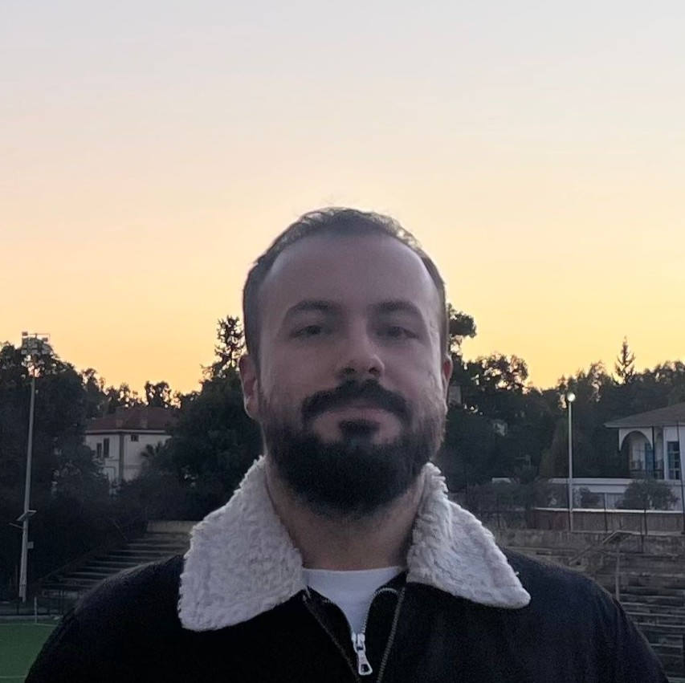

University of California San Diego
Ph.D. in Electrical and Computer Engineering · San Diego, California
August 2026 – Present
I am a Ph.D. student in Electrical and Computer Engineering at the University of California San Diego, with research interests spanning wireless communications, goal-oriented and semantic communications, AI/RL for communications.
This website is a place where I share my academic background, research experience, publications, and a little about who I am outside of research. My previous work broadly explores how to design communication systems that incorporate intelligent platforms with a focus on goal-oriented communication. I am currently working on my Ph.D. research at UC San Diego, where I am exploring next generation wireless communication frameworks.

A. Saday, İ. Demirel, Y. Yıldırım, and C. Tekin, “Federated multi-armed bandits under byzantine attacks,” IEEE Transactions on Artificial Intelligence, pp. 1–14, 2025. doi: 10.1109/TAI.2024.3524954
Y. Yıldırım, and O. Arıkan, "Decision-Driven Goal-Oriented Communication Scheme for Connected Autonomy: Action Innovation," IEEE Transactions on Network Science and Engineering (submitted), 2026.
Y. Yıldırım, B. Uykulu, M. I. Caliskan, et al., "Content-Centric Semantic Communications for Sensor Clusters: Goal-Oriented Prioritization and Random Access," IEEE Internet of Things Journal (submitted), 2026.
Y. Yildirim, B. Uykulu, M. I. Caliskan, et al., “Priority assignment of packets in sensor nodes for goal-oriented semantic communications,” in 2026 IEEE International Conference on Communications (IEEE ICC), Glasgow, United Kingdom, 2026, pp. 1-6, doi: 10.1109/ICC59461.2026.11588216
Y. Yildirim and O. Arikan, “A Goal-Oriented Effective Communication Scheme via Action Innovations,” 2025 IEEE 36th International Symposium on Personal, Indoor and Mobile Radio Communications (PIMRC), Istanbul, Turkiye, 2025, pp. 1–6. doi: 10.1109/PIMRC62392.2025.11274615
Y. Yildirim and O. Arıkan, “Clustering of high dimensional datasets with random orthogonal projections,” in 2025 33rd Signal Processing and Communications Applications Conference (SIU), 2025, pp. 1–4. doi: 10.1109/SIU66497.2025.11112049
A. Ozdemir, O. Soysal, E. Doganay, Y. Yildirim, and O. Arikan, “Low-Rank Compression of Neural Network Weights by Null-Space Encouragement,” 2025 Asia Pacific Signal and Information Processing Association Annual Summit and Conference (APSIPA ASC), Singapore, 2025, pp. 1194–1199. doi: 10.1109/APSIPAASC65261.2025.11249299
O. Soysal, A. Ozdemir, Y. Yildirim, and O. Arikan, “Monomial Matrix Relocation on the Loss Function Level-Set of Feedforward Neural Networks,” 2025 Asia Pacific Signal and Information Processing Association Annual Summit and Conference (APSIPA ASC), Singapore, 2025, pp. 1188–1193. doi: 10.1109/APSIPAASC65261.2025.11249160
Y. Yildirim and O. Arikan, “A goal-oriented effective communication scheme via action innovations,” presented at the 2025 Bilkent Graduate Research Conference (GRC), 2025.
Y. Yildirim and O. Arikan, “A goal-oriented effective communication scheme via action innovations,” poster at the Science Academy – Bilkent Semantic Communications Summer School, 2025.
Outside the lab, I enjoy a variety of activities that keep me engaged. Here is a glimpse into some of my hobbies and interests that I pursue in my free time.
I am passionate about building detailed models (especially Warhammer 40k miniatures) and playing board games. You can find me at local board game cafes or participating in online gaming communities.
I love exploring new places and cultures. I have traveled to several countries, and my next goal is to visit Japan.
I have a keen interest in motorcycles, particularly Harley-Davidson. I am looking forward to getting my own Harley-Davidson in the near future.